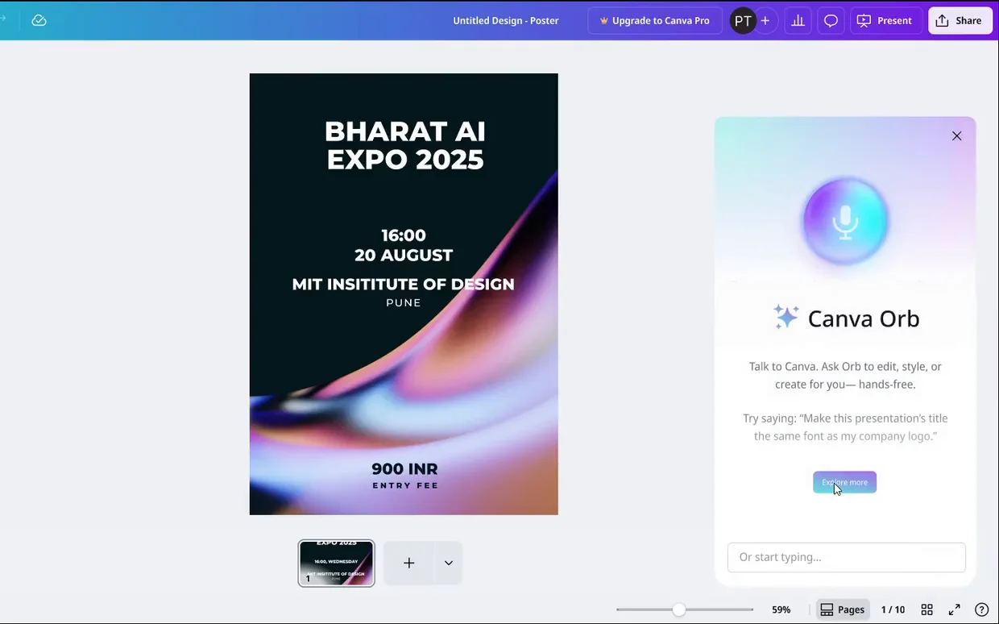
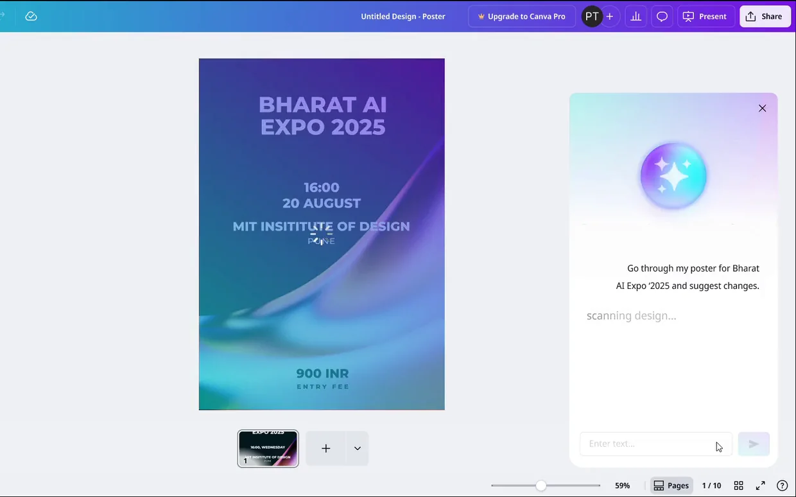
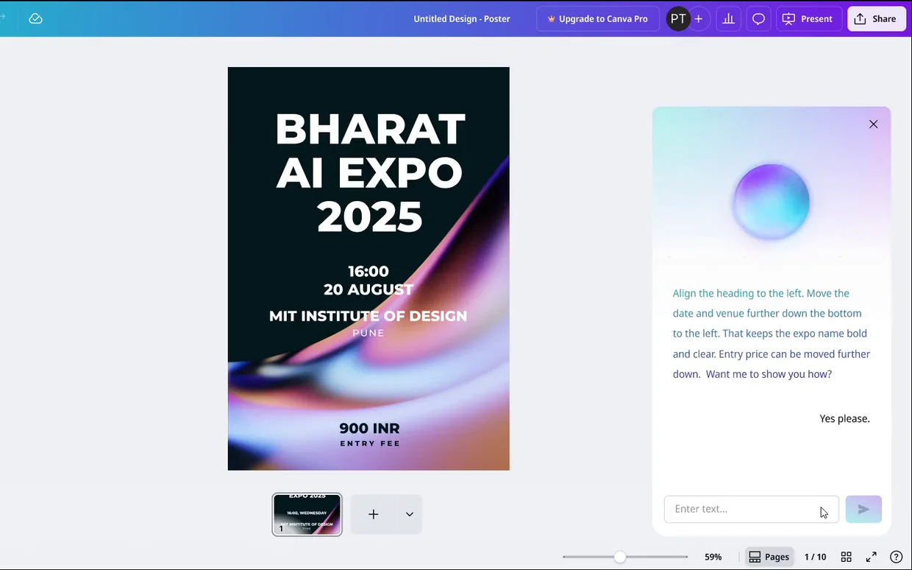
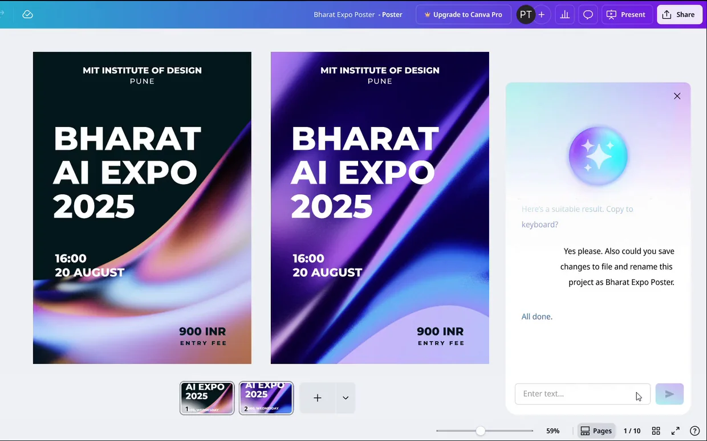
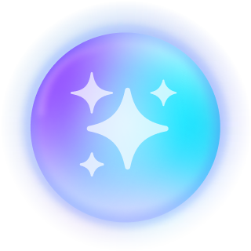

Most of Canva’s 180 million monthly users aren’t designers. They can tell when a poster looks wrong, but not why, and they can’t put it in design words.
Canva AI took them literally.
We evaluated Canva AI, Canva’s built-in assistant, with 50 prompts written the way these users write. It did what was typed, not what was meant: a new file instead of an edit, bold text for “more intense”.
“I am all out of content to put and this poster still feels monotonous.”
We turned what we saw into seven tests.
Each failure gave its name to a quality the assistant needed. Together they spell CAPABLE, and every screen of the redesign answers to them.
- C
Contextual understanding
- A
Agency and control
- P
Proactive suggestion
- A
Aesthetic alignment
- B
Boundary awareness
- L
Learning and evolution
- E
Efficiency and flow
We redesigned it as Orb, a design consultant.
Orb is our redesign of Canva AI. It sits beside your design, works in the file you have open, and asks before it changes anything. Step through one conversation with it.




Try step 4 yourself.
Canva’s editor with Orb, rebuilt in code. Press send, and Orb reviews the poster, then asks before it changes anything.

Applied. The heading and subheadings now use the same font styles as previous projects for consistency. Anything else?
Orb fixes what Canva AI got wrong.
- Opened a new file
- Works in the file you have open
- Read “more intense” as bold
- Knows what “my usual font size” means
- Did exactly what was typed
- Diagnoses the problem, then asks
- Moved text it was told to keep
- Keeps the layout and text it is told to keep
- Needed trial and error
- Takes two requests in one message
Watch the whole conversation.
Orb on the real poster, from the first question to the renamed file. Jump to any part.